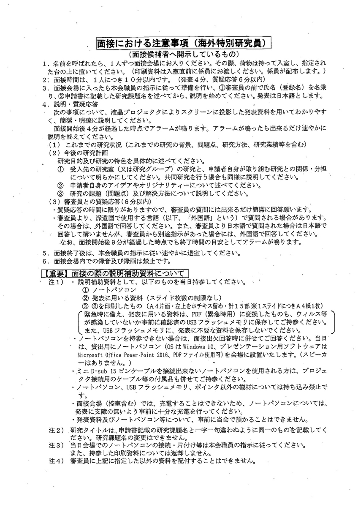
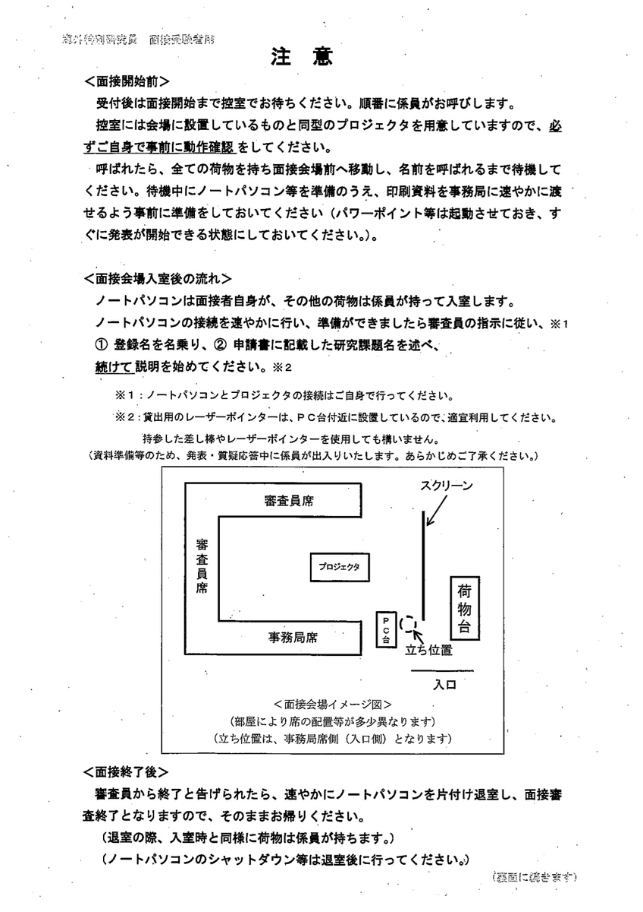

この記事ではフランス生活の簡単なメモを残します。
海外学振面接
以前、海外学振の面接を経験しました。その体験をざっとまとめました。
時系列に沿って感想戦
- 会場は麹町の学振本部
- 前日に近所のホテルにチェックイン、会場まで1度歩いてイメトレ
- 無難にスーツ
- 1階には誰もおらず、会場X階と書いてあったのでエレベーターでその階まで向かう
- エレベーターを出ると受付があり、名前を言って出席確認、私の前の人たちに全員チェックが打ってあったので、その時点で面接辞退者はいないんだ、と思った
- 待合室に行くと注意事項の書いた用紙(下図参照)がもらえる
- 待合室には50人くらい座れそうな部屋に、5~6人待っている人がいた(みんなスーツ)
- 後ろにはプロジェクタ3台置いてあり、接続チェック
- 自分の番から2人前になると、面接室の前に座る(すなわち面接室の前には2人待っている)
- 部屋で面接している人の声がめちゃくちゃ聞こえる
- 数物系科学の部屋の隣では、社会科学の面接が行われていたみたい
- 待っている間に、面接官のお昼のお弁当が運ばれてきていた
- 呼ばれると同時にカバンと印刷した配布資料を預ける
- 部屋の配置が図とは反対(スクリーンの右に立つ)だったため焦る
- 指し棒またはレーザーポインタが置かれていた、マイクはなし
- 審査員5人くらい(全員知らなかった)に加えて、事務局員4人くらい
- 氏名と研究課題名を言ったあとに、「ピッ」とタイマー開始音が聞こえた
- 発表時間は3分59秒と練習通り
- スライドの構成: 「表紙+研究の背景+これまでの研究の問題点+これまでの申請者の研究+今後の研究の目的及び特色+今後の研究の課題・解決方法+受入先の研究との関係+まとめ」の8ページ、1ページあたり約30秒として一言一句暗記
- 質問はざっくりと、①本当にそれできるの？②現地のプロジェクトにどれだけ絡めそう？の2点
- 質疑応答、質問は2つだけ、かなり緊張してテンパっていた、時間を残して無念の退出
- 会場の外に出たのは11:35くらい
海外学振面接時にもらえる注意事項。


保険年金編
この記事ではフランスにいる間の社会保障や年金をどうしたか書いていきます。
前提条件
- いずれ日本に帰って来たいので2人とも国民年金は任意加入
- フランスの健康保険(Sécurité Sociale)の恩恵も2人とも受けられる
- 保険証(Carte Vitale)が来るのが遅い、カバーが不十分であることも想定
- 任意保険に入ることに
最有力候補
値段などを見ると以下の二つかなと思いました。
StepinもグローブパートナーもEU圏の滞在を1年カバーしてくれて、しかも日本の保険会社と比較しても安い(月50−70EURくらい)。
Stepinの体験談とか口コミはあまり見ないけど、住宅保険も付帯しているようです。グローブパートナーは留学やワーホリではよく利用されているようでした。
ということで、Stepinに加入しました。
余談 – 家探し
アパートですが、私はいろいろとネットを利用して探しましたが、最終的には、知人にパリ在住の不動産屋さんで働く日本人の方を紹介してもらって、出国前に決めてしまいました。
Talent passportの心配事
研究者ビザと同行家族ビザが無事入手できましたが、ひとつ心配事が。
ふたりのビザの有効期限を見たところ、
From 22/8/20
Until 20/11/20
Duration XXX
と書いてあり、DurationがXXXという表記でした。しかも、ビザの有効期限が3ヶ月しかなかったです。他の研究者ビザの記事を見たり、知人のビザを見せてもらったりして、1年のビザがもらえると思っていました・・・。
いろいろと調べた結果、例えばこのサイトによると、Talent passport(研究者ビザ)には
- R-311-3 9°
- L313-20 4°
の2種類ある。
前者(R-311-3 9°)は、1年以下の滞在で発給されていて、多くの知人はこれでした。
一方、私のコンバンションダキュイは1年と2週間だったので、後者(L313-20 4°)のビザになっており、この場合は2ヶ月以内に県庁に行って1年以上の長期滞在許可証を手に入れる必要があるようです。
前者は滞在許可証も兼ねてるものがほとんどで、初年度は県庁行く必要がないようです。
そして、フランス大使館に念のためメールで確認したところ、
If the convention d’accueil is for a year or longer, the visa issued will be for 3 months. You will be able to apply for your residence permit at the ‘préfecture’ in France, 2 months before your visa expires. We confirm that your visa is the visa passport talent researcher + researcher family for your wife.
とのことなので、調べた内容は正しいように思いました。
ビザ申請編
必要書類も揃ったところで(以前の記事)、フランス大使館のビザ申請を予約して、申請書を準備します。
ビザ申請の準備
- ビザセクションのネット予約
- France-Visasでビザ申請書の用意
注意事項
2020年2月13日 フランスのビザ申請方法が変わったらしいのでそれより古い情報を参照している方は気をつけてください。
現在は、France-Visasからビザが必要か、どの種類のビザが必要か、などなど記入して進んでいくようです。例えば種類を選択するとき研究者ビザの場合、
Your plans: Talent Passport - international talents
Main purpose of stay: Scientists - Researcher/Talent
を選べばよい。また、同行家族ビザに該当するYour plansとMain purpose of stayは、
Your plans: Familial or private establishment (adult)
Main purpose of stay: Accompanying family of holder of skilled residence permit or ICT posted employee and professional work placement (adult)
で大丈夫だった。そして、以上の申し込みが完了した時に必要書類一覧が出てきた。
- Application form dated and signed (最後に出てくるpdfを印刷)
- A travel document (=パスポート)
- France-Visas receipt (最後に出てくるpdfを印刷)
- ID photograph (証明写真)
- コンバンションダキュイ
- 学位証明書
- 99ユーロ(現金)
同行家族ビザに関しては、
- Application form dated and signed (最後に出てくるpdfを印刷)
- A travel document (=パスポート)
- France-Visas receipt (最後に出てくるpdfを印刷)
- ID photograph (証明写真)
- Civil registry certificates (アポスティーユ付き戸籍謄本およびその法定翻訳)
- Beneficiary’s employment contract form (コンバンションダキュイのコピー？)
- 99ユーロ
あとは在日フランス大使館に予約日に向かい、申請書などを提出して結果を待ちます。この間パスポートは手元から離れます。ちなみにコンバンションダキュイの一部を書き忘れていたため、大使館からメールで内容を教えてくれ、と言われてすぐに返信して事なきを得ました。柔軟に対応していただいて助かりました。